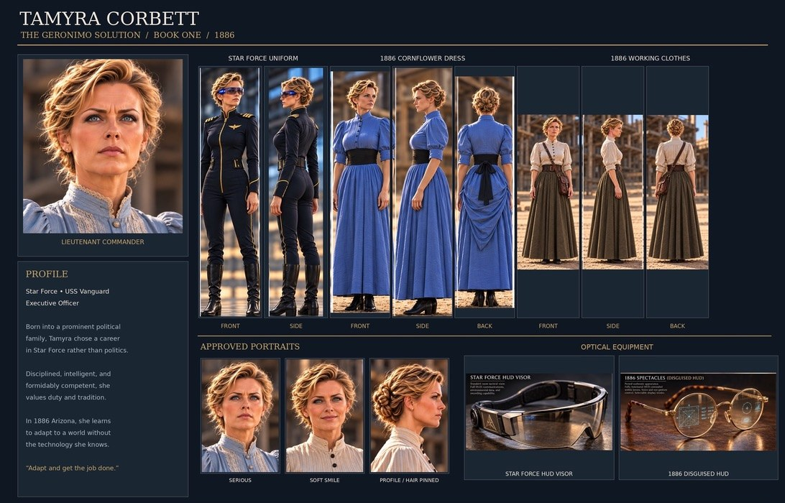
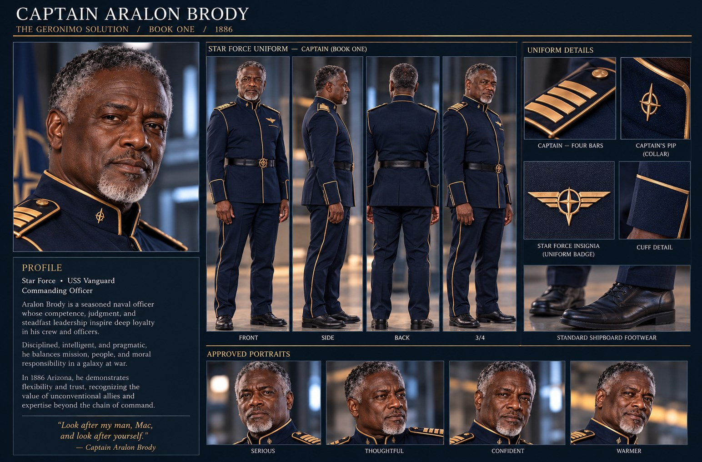
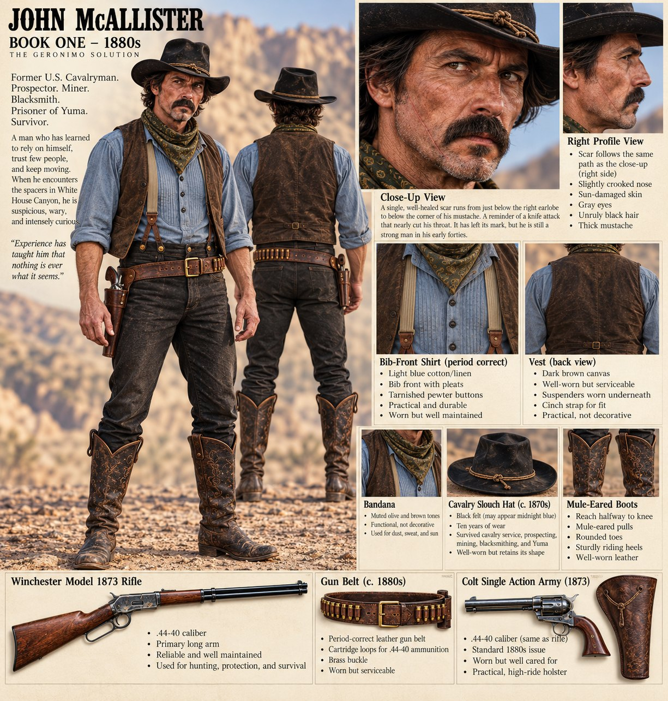
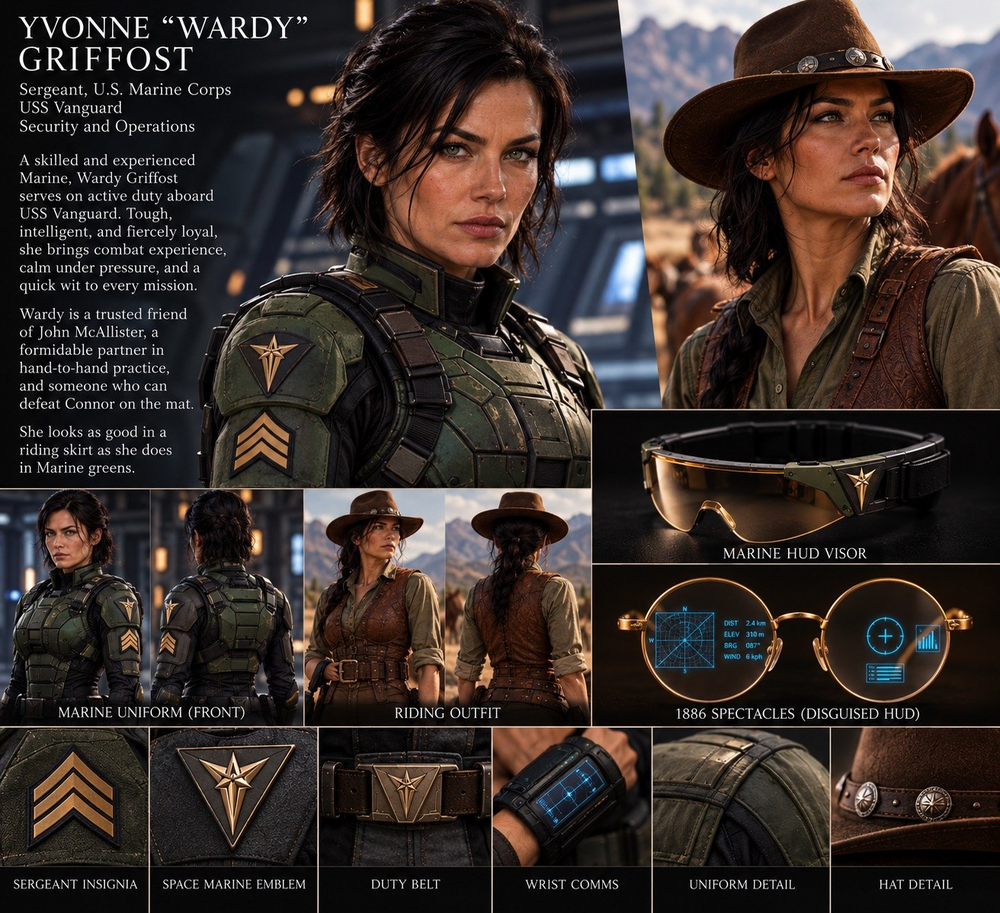

Characters
Design sheets for the people of the Geronimo Saga, drawn as they appear in Book One. Select any sheet to see it full size.
Command






Crew and Territory


Coming to this page
- Harry Hennessey, proprietor of Hennessey’s Saloon, Tucson
- Geronimo, as he was in 1886
- Prokeshk and Votha
- More of the crew, the Apache, and the people of the Arizona Territory